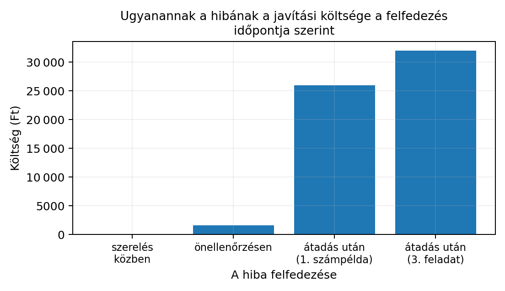
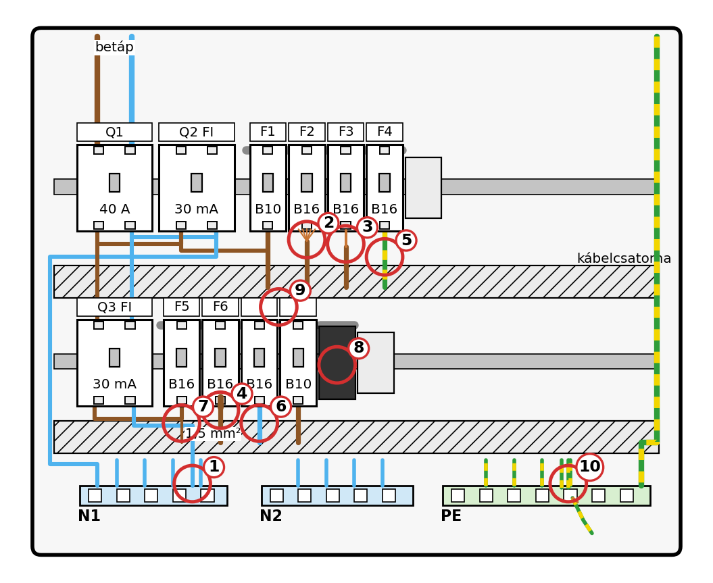

A kapcsolódó elmélet: tankönyv, 14.1 alfejezet.
Cél. Készíts egyszerű, saját munkádhoz használható ellenőrző listát, és gyakorold a dokumentált önellenőrzést.
Eszközök és anyagok: papír vagy táblázatkezelő, toll, az adott szerelési feladat terve, mérőműszer. Kiindulásnak használhatod a Nyomtatható jegyzőkönyvek és sablonok (tankönyv) függelék szerelői ellenőrzőlistáját (E3).
Biztonsági korlát. A feladat tanműhelyi (törpefeszültségű) környezetre vagy jogosult oktató felügyeletére vonatkozik; hálózati feszültségen önállóan ne végezd.
Az alfejezet későbbi részében ezt a listát a gyakorlati feladatban is használni fogod.
A fejezet központi állítását – a hiba minél később derül ki, annál drágább – a fejezet saját számpéldái mutatják meg. Az alábbi diagram ugyanannak a kötéshibának a javítási költségét veti össze a felfedezés időpontja szerint.

Olvasd le: az önellenőrzésen talált hiba (1 625 Ft) körülbelül tizenhatod-huszad része az átadás után talált ugyanilyen hibának (26 000–32 000 Ft). A PDCA-ciklus „Act” (beavatkozás) lépése ezért nem áll meg a javításnál: minden átadás után talált hibánál a saját ellenőrző listát is ki kell egészíteni azzal a sorral, amely a hibát legközelebb már a szerelés közben megfogja.
1. feladat (A)
Sorold fel a szerelői önellenőrzés három pillérét, és mindegyikhez adj
egy konkrét példát!
2. feladat (A)
Igaz vagy hamis? Indokold!
a) A minőségbiztosítás lényege, hogy minden hibát a vásárló
észleljen.
b) A hibaköltség lehet belső és külső.
c) A szerelői ellenőrző listát csak a művezető készítheti el.
3. feladat (B)
Egy hibás érvéghüvelypréselés miatt a kötés üzem közben melegszik. Az
átadás utáni javítás adatai: kiszállás 1,5 óra 7 000 Ft/óra; hibakeresés
és bontás 2 óra 6 500 Ft/óra; anyag 3 500 Ft; újraellenőrzés 5 000 Ft.
Becsüld meg a külső hibaköltséget! Mennyi lett volna a költség, ha az
átadás előtti önellenőrzésen veszik észre, és a javítás 15 percet vesz
igénybe?
4. feladat (B)
Tervezz egyszerű ellenőrző listát öt sorból egy dugaszoló aljzat
bekötésének szerelés közbeni fázisához! Minden sorhoz jelöld,
hogy szemrevételezés, mérés vagy rajz-egyezés-e.
5. feladat (C)
Egy szerelés átadás előtt van. A szerelő nem találja a
hurokimpedancia-mérés jegyzőkönyvét. Milyen hibaköltség-növelő
következményei lehetnek ennek, és hogyan előzhető meg?
6. feladat (D)
Használd a gyakorlati útmutatóban bemutatott listakészítő módszert egy
világítási váltókapcsolás ellenőrzésére. Írd le, milyen
eredményt írnál a listába, ha a mérés azt mutatja, hogy az egyik
kapcsoló nem működik, és a kapcsoló közös kapcsára (L) nem a fázis-,
hanem az egyik váltóvezeték van kötve.
7. feladat (C)
Egy csapatnál ismétlődik, hogy a váltókapcsolóban a közös kapocs egy
váltóvezetékkel felcserélődik. Végezz „5 miért” elemzést, és javasolj
intézkedést!
1. feladat (A)
A három pillér: rajz, valóság, mérés. Például
rajz-egyezés: a kapcsolási rajzon szereplő nyomvonalak és a tényleges
bekötés azonosak. Valóság: a csavarkötések meghúzottak, a szigetelés nem
sérült. Mérés: a védővezető folytonossága megfelelő, a szigetelési
ellenállás a megadott határ felett van.
2. feladat (A)
a) Hamis. A minőségbiztosítás célja, hogy a hibákat a lehető
legkorábban, lehetőleg a cégen belül tárja fel.
b) Igaz. A belső hibaköltség átadás előtt, a külső hibaköltség átadás
után jelentkezik.
c) Hamis. A szerelői ellenőrző listát maga a szerelő is elkészítheti;
éppen ez a szemlélet lényege.
3. feladat (B)
Külső hibaköltség:
Ha az átadás előtt, 15 perc alatt javítják:
anyag és külön kiszállás nélkül. A különbség tehát nagyon nagy, ezért
éri meg az önellenőrzés.
4. feladat (B)
Például:
1. A fázis barna vezeték az L kapocsba van bekötve.
(szemrevételezés)
2. A kék nulla az N kapocsba kerül, a zöld-sárga védővezető a PE
kapocsba. (szemrevételezés)
3. A csavarok meg vannak húzva, a vezeték nem mozog.
(szemrevételezés)
4. A kapcsolási rajzon szereplő jelölés egyezik a valósággal.
(rajz-egyezés)
5. A védővezető folytonossága mérőműszerrel ellenőrizve megfelelő.
(mérés)
5. feladat (C)
Ha nincs jegyzőkönyv, akkor az átadónak és a megrendelőnek nincs
bizonyítéka arról, hogy a védelmi mérést elvégezték. Ez garanciális
vitában hátrány, a hatósági felülvizsgálatnál hiányosság, és
előfordulhat, hogy a mérést újra el kell végezni. Megelőzés: a mérést a
helyszínen, a mérési jegyzőkönyvet azonnal ki kell tölteni, dátummal,
aláírással, műszeradatokkal; a jegyzőkönyvet a dokumentációval együtt
tárolni, és másolatot a megrendelőnek is adni.
6. feladat (D)
Egy váltókapcsolásnál a lista szerint ellenőrzöd: a kapcsolási rajz és a
huzalozás egyezését, a kapcsolók kapocsbekötését, a fázisvezető helyét,
a váltóvezetékek párját, a lámpa működését, a védővezető folytonosságát.
Ha a mérés azt mutatja, hogy az egyik kapcsoló nem működik, és a
kapcsoló közös kapcsára (L) nem a fázis-, hanem az egyik váltóvezeték
van kötve, akkor a listában rögzíted: nem felel meg.
Leírod a hibát: a közös kapocs és egy váltóvezeték fel van cserélve.
(Megjegyzés: a két váltóvezeték egymással való felcserélése nem hiba, a
kapcsolás működik, csak a kapcsolóállás–lámpaállapot hozzárendelés
fordul meg.) Intézkedés: feszültségmentesítés az öt szabály szerint, a
közös kapocs bekötésének javítása, majd működési próba mind a négy
állásban és a lista újra ellenőrzése. A javítás után a lista kimenete:
megfelel.
7. feladat (C)
Mintamegoldás (a valós okot a helyszínen kell igazolni):
Intézkedés: listasor („a közös kapocs azonosítása a kapocstábla szerint, bekötés előtt”), megfelelő kézilámpa, egységes szerelvénytípus, a dobozkötésről fotó, és takarás előtt a négyállásos mérés.

| # | Hiba | Kockázat | Javítás | Melyik ellenőrzés fogja meg |
|---|---|---|---|---|
| 1 | A két FI-csoport N-vezetője ugyanarra az N-sínre (N1) fut | a két FI N-árama keveredik: terheléskor a FI-k tévesen kioldanak, az N2-sín táplálatlan, így a Q3 csoport körei N nélkül maradnak | a Q3 N-kimenetét az N2-sínre kötni; minden FI-csoportnak saját N-sín | FI-csoportok saját N-sínnel (R/Sz) |
| 2 | Sodrott ér érvéghüvely nélkül, szétálló szálakkal (F2) | egyes szálak kimaradnak a kapocsból: laza kötés, melegedés; a kiálló szál zárlatot okozhat | érvéghüvely (megfelelő méret, préselve), húzópróba | érvéghüvely sodrott éren (Sz) |
| 3 | Túl hosszú csupaszolás – csupasz réz a kapcson kívül (F3) | érinthető, feszültség alatti rész; zárlatveszély a szomszédos vezetővel | a vezetőt visszavágni, a csupaszolási sablon szerint újracsupaszolni | csupaszolási hossz a sablon szerint (Sz) |
| 4 | Szigetelés a kapocs alá szorítva (F6) | a kötés elsőre tart, de terhelés alatt a műanyag enged: lazulás, melegedés, égés | kioldani, helyes hosszon csupaszolni, újrakötni, nyomatékkal meghúzni | csavarnyomaték, szigetelés nem szorul be (M/Sz) |
| 5 | Zöld-sárga ér fázisvezetőként a kismegszakító kimenetén (F4) | a zöld-sárga ér kizárólag védővezető lehet: életveszélyes tévedés a következő szerelőnél | a vezetéket megfelelő színű (barna/fekete/szürke) érre cserélni | színjelölés (Sz) |
| 6 | Kék ér fázisvezetőként jelölés nélkül (F7) | a kéket N-nek gondolják: feszültség alatti vezető „nullaként” kezelve | barna érre cserélni (ha kék ér fázisként elkerülhetetlen, mindkét végén barna jelöléssel) | színjelölés (Sz) |
| 7 | 1,5 mm²-es vezeték a B16-os kismegszakítón (F5, „aljzatkör”) | a 16 A-es védelem nem védi az 1,5 mm²-es vezetéket túlterhelés ellen: melegedés | 2,5 mm²-es vezeték, vagy a védelmet a vezetékhez igazítani (ellenőrizendő: terhelhetőség, szerelési mód) | keresztmetszet és védelem a terv szerint (R) |
| 8 | Hiányzó takarólap üres modulhelyen | a burkolat nyílásán át feszültség alatti rész (sín) érinthető | takarólapot (vakmodult) behelyezni | takarólap a szabad helyeken (Sz) |
| 9 | Hiányzó felirat két kismegszakítón (F7, F8) | hibánál nem azonosítható a kör: rossz kör kapcsolható le, vagy a teljes elosztó | feliratcsík a rajz szerint (jel + rendeltetés), áramkörjegyzék az ajtón | feliratok a rajz szerint (R) |
| 10 | PE-sín egy kapcsában három vezető, egy laza és kiálló | a PE-folytonosság megszakadhat: hibánál a fém testek feszültség alá kerülnek | kapcsonként a gyártó által engedett számú vezető, mindegyik meghúzva; PE-folytonosság mérése | PE-folytonosság minden körre (M) |
Példa. Egy lakáselosztó cseréjénél a szerelő a lista 3. pontjában (szerelés közben, munkafázisként) ellenőrzi a nullavezető sorkapcsát. Laza a kötés. A lista segít abban, hogy ne ugorja át ezt a lépést pusztán azért, mert „úgyis működik”. A hiba javítása itt még percek kérdése.
A 3. pont („szerelés közben”) leggyakoribb hibáit egy csavaros sorkapocs metszetén mutatja az alábbi ábra. Az (a) helyes kötésnél a csupasz vezető teljes hosszában a szorítólap alatt van, a szigetelés éppen a kapocs nyílásáig ér. A (b) túl hosszú csupaszolásnál csupasz réz marad a kapcson kívül, a (c) túl rövid csupaszolásnál a szigetelés kerül a szorítás alá, a (d) sodrott (hajlékony) érnél érvéghüvely nélkül a szálak szétállnak.
Gyakorlat: keresd meg a hibákat! A szemrevételezés („valóság” pillér) csak gyakorlással lesz rutin. Az alábbi nyitott lakáselosztóban (Q1 főkapcsoló, Q2 és Q3 áram-védőkapcsoló két csoporttal, F1–F8 kismegszakító, N1/N2 N-sín, PE-sín) tíz hiba van: bekötési, színjelölési, méretezési, takarási és feliratozási hibák vegyesen. Mielőtt a megoldást megnéznéd, írd le a hibákat egy papírra, és mindegyikhez azt is, mi lehet a következménye.